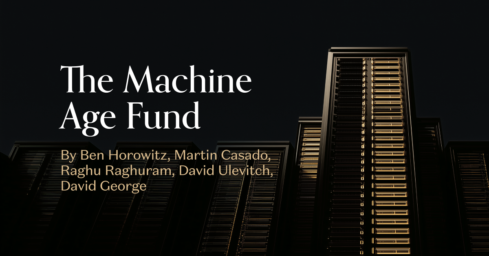
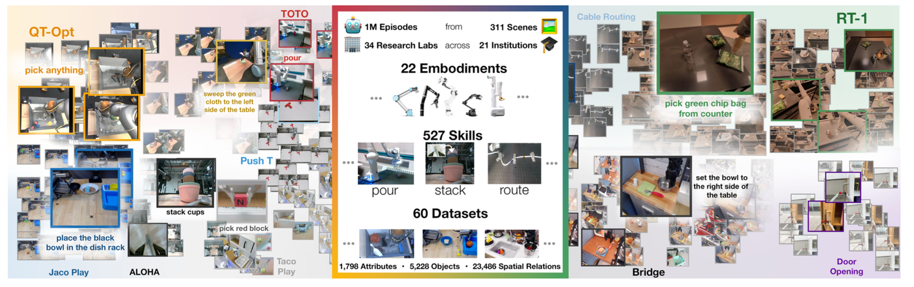

Executive Summary
소프트웨어 투자로 이름을 얻은 안드리센 호로위츠가 2026년 8월 28일 하드웨어만 담는 펀드를 따로 만들었습니다. 규모는 11억 달러이고 이름은 머신 에이지 펀드입니다. 칩과 메모리, 네트워킹, 스토리지 같은 컴퓨트 인프라부터 데이터센터와 로봇, 가정용 AI 기기까지가 투자 대상입니다.
근거로 든 숫자는 전력입니다. 랙 한 대가 쓰던 전력이 5~10킬로와트에서 오늘날 100~250킬로와트로 올라섰고, 앞으로 3년 안에 1메가와트에 이른다는 것이 회사의 전망입니다. 하드웨어 업계의 통상 성장률은 연 20~30%인데 수요는 세 자릿수 성장을 요구합니다. 회사는 지금의 공급망 능력으로 이 수요를 감당할 수 없다고 봅니다.
빠져 있는 것은 데이터입니다. 단어 자체는 본문에 네 번 나오지만 네 번 다 데이터센터를 가리킵니다. 로봇과 엣지 기기는 AI가 바깥 세계를 다루도록 돕는 장치로 서술될 뿐, 그 장치들이 초당 쌓아 올릴 기록에 대해서는 한 문장도 없습니다.
주요 수치
앞의 세 숫자는 발표문이 근거로 든 것이고, 마지막 하나는 발표문이 다루지 않은 쪽에서 가져왔습니다. 자본과 전력은 억 달러와 메가와트로 세는데, 그 장비들이 남길 기록은 아직 시간 단위로 셉니다.
출처: a16z, The Machine Age Fund(2026-08-28) · Khazatsky 외(2024) DROID
11억 달러
머신 에이지 펀드 규모
a16z가 처음 만든 하드웨어 전용 벤처 펀드
1MW
3년 뒤 랙 한 대의 전력
5~10kW에서 시작해 지금 100~250kW를 지나는 중
28배
랙 컴퓨트 밀도 증가
H100 랙에서 Rubin 랙으로 넘어오며
350시간
DROID 로봇 조작 데이터 총량
세 대륙 50명이 12개월 동안 모은 공개 데이터셋
간간이 하던 일이 상시 업무가 됐다
a16z가 8월 28일 올린 발표문의 첫 문장은 11억 달러를 모았다는 사실입니다. 회사는 이 돈으로 AI가 돌아가는 컴퓨터 인프라 전체에 투자하겠다고 적었습니다. 칩과 메모리, 네트워킹, 스토리지가 한 묶음이고, AI를 실제로 굴리는 완성 시스템이 또 한 묶음입니다. 뒤쪽 묶음에는 데이터센터와 로보틱스, 가정용 AI 기기가 나란히 들어갑니다. 발표문에 이름을 올린 파트너는 벤 호로위츠, 마틴 카사도, 라구 라구람, 데이비드 울레비치, 데이비드 조지 다섯 명입니다.

a16z는 오랫동안 반대쪽에 서 있던 회사입니다. 마크 안드리센이 소프트웨어가 세상을 먹어 치운다고 쓴 지 15년이 지났고, 그 사이 회사의 명성은 자본이 적게 들고 반복이 빠른 소프트웨어 플레이북에서 나왔습니다. 하드웨어에 아예 손을 안 댄 것은 아닙니다. 2016년 스카이디오 시리즈 A를 이끌었고, 스페이스X에 투자했으며, 2019년 안두릴에 첫 수표를 썼고, 2020년 웨이모 라운드에도 초기 벤처 투자자로 들어갔습니다. 다만 마틴 카사도의 표현으로 그것은 한 번도 주력이었던 적이 없습니다.
바뀐 것은 창업자 쪽입니다. 발표문은 지난 몇 년 사이 하드웨어 스타트업이 회사 전체 딜플로우에서 아주 작은 비중이었다가 20%를 넘겼다고 밝혔습니다. 최근 투자한 하드웨어 회사로는 언컨벤셔널 AI, 넥스트홉, 볼타, 아톰스, 헤론 파워, 마인드 로보틱스를 들었습니다. 팀 구성도 이 방향에 맞춰 소개됩니다. 귀도 아펜첼러는 인텔 데이터센터그룹의 최고기술책임자였고, 라구람과 카사도는 시스템 소프트웨어를 다루며 데이터센터 영역에서 수십 년을 보냈습니다. 상다 쉬와 데이비드 조지는 실리콘과 네트워킹에서 대규모 시스템과 컴퓨트 플랫폼까지 AI 인프라 스택 전반에 투자해 왔습니다. 데이비드 울레비치와 에린 프라이스라이트는 아메리칸 다이너미즘 부문을 통해 회사의 하드웨어·미국 제조업 투자를 이미 맡아 온 사람들입니다.
회사가 스스로 붙인 표현은 하드웨어를 a16z의 공식 영역으로 만든다는 것입니다. 개별 투자로 간간이 하던 일이 전담 자금과 전담 인력을 갖춘 상시 업무가 됐습니다. 발표문이 그 승격의 내용으로 적은 것은 돈만이 아닙니다. 시장 진입과 채용과 마케팅을 맡아 온 회사 내부 조직이 이제 하드웨어 창업자를 상대할 준비가 됐고, 고객과 공급사로 이어지는 회사의 연결망을 함께 쓰겠다는 것입니다. 라구 라구람은 이 펀드가 담는 범위를 데이터센터 네 벽 안에 있는 것들이라고 설명했습니다.
랙 한 대가 1메가와트를 먹는다
왜 지금이냐는 질문에 발표문이 내놓은 답은 수요와 공급의 시차입니다. 채팅에서 추론으로, 추론에서 코딩과 다른 형태의 지식 노동으로 AI의 쓰임이 넘어가면서 일의 양과 토큰 밀도가 자릿수 단위로 뛰었습니다. 반면 하드웨어 공급 쪽은 잘해야 연 20~30% 성장에 맞춰진 산업입니다. 회사는 이 격차를 두고 스택의 모든 층이 오늘날 공급망 능력의 벽에, 그리고 물리학과 컴퓨터과학의 한계에 부딪히고 있다고 적었습니다.
발표문은 아래층을 다시 짓는 일 자체가 처음은 아니라고 전제합니다. 메인프레임에서 클라이언트 서버로, 다시 인터넷과 클라우드와 모바일로 넘어갈 때마다 컴퓨팅의 밑단은 한 번씩 다시 지어졌습니다. 이번에 다른 것은 수요를 따라가는 데 필요한 변화의 크기와 폭, 그리고 그것을 해내야 하는 속도라고 회사는 말합니다. 마틴 카사도는 기술의 시대가 바뀔 때마다 인프라에 압력이 가지만 이 정도로 극적인 것은 우리 중 누구도 본 적이 없다고 말했습니다. 그래서 회사는 지금을 한 세대에 한 번 오는 기회로 부르면서, 다시 설계해야 할 범위에 전기까지 넣었습니다.
격차의 크기는 전력에서 가장 잘 드러납니다. 랙 한 대가 쓰는 전력은 대략 5~10킬로와트였습니다. 지금 시스템을 돌리기 위해 그 값이 100~250킬로와트로 올라섰고, 앞으로 3년 안에 1메가와트에 이를 것으로 발표문은 내다봅니다. 같은 목록의 다른 줄에서 컴퓨트 밀도는 H100 랙에서 Rubin 랙으로 넘어오며 28배가 됐고, 랙 안쪽 네트워킹도 비슷한 비율로 커지면서 구리 케이블의 한계에 닿았습니다. 데이터센터 자체의 규모 단위도 수십 메가와트에서 수백 메가와트로, 경우에 따라 기가와트급 캠퍼스로 옮겨 가는 중입니다.
전력이 이 정도로 오르면 문제는 칩에서 끝나지 않습니다. 발표문이 필요하다고 나열한 목록에는 더 빠르고 효율적인 시스템, 메모리 계층 전반에 걸친 더 싸고 대역폭 높은 메모리, 노드와 시스템 사이의 더 빠르고 확장 가능한 인터커넥트가 들어갑니다. 그리고 그 뒤에 냉각과 자재, 전기 설비, 그것들을 앉힐 부지와 건물 공사가 따라붙습니다. 전력을 어디서 끌어오는지도 달라집니다. 발표문은 전력망에만 기대던 방식에서 전력망에 더해 계량기 뒤쪽 자체 발전을 함께 쓰는 쪽으로 바뀌고 있다고 봅니다.
이 목록에서 딱 한 줄이 데이터센터 밖을 가리킵니다. AI가 세계를 탐색하고 상호작용하려면 전력 효율이 좋은 엣지 기기가 필요하다는 문장입니다. 로봇과 가정용 AI 기기가 투자 대상에 들어온 이유가 여기 있습니다.
자본은 이미 로봇까지 내려왔다
11억 달러는 테마 펀드로는 큰 편이지만 a16z 안에서는 작은 조각입니다. 회사의 운용자산은 1,000억 달러가 넘고, 올해 1월에만 후기 단계용 67억 5,000만 달러를 포함해 150억 달러 이상을 여러 펀드로 모았습니다. 이 펀드의 의미는 액수보다 방향에 있습니다. 소프트웨어를 대표하던 곳이 물리 계층을 전담 조직의 대상으로 지정했다는 사실 자체가 신호입니다.
그쪽으로 간 자본이 a16z만도 아닙니다. 크런치베이스 집계로 전 세계 로보틱스 스타트업이 2026년에 모은 돈은 6월 하순까지 188억 달러입니다. 해가 반이나 남은 시점에 2025년 연간 총액 150억 달러를 이미 넘겼고, 벤처 시장이 정점을 찍었던 2021년의 141억 달러도 앞질렀습니다. 휴머노이드로 범위를 좁히면 딜룸 집계로 올해 87억 달러가 들어갔는데, 이 역시 2025년 연간 기록의 두 배입니다. 피치북 기준으로 반도체와 자율 기계 스타트업이 지난 1년간 조달한 금액은 대략 1,000억 달러입니다.
a16z가 발표문에 적어 둔 포트폴리오 이름 하나가 이 흐름과 겹칩니다. 리비안에서 갈라져 나온 마인드 로보틱스는 올해 3월 액셀과 안드리센 호로위츠가 공동으로 이끈 5억 달러 시리즈 A를 닫았고, 5월에 클라이너 퍼킨스가 이끄는 4억 달러를 추가로 받았습니다. 산업과 제조 현장의 작업을 대규모로 자동화하겠다는 회사입니다. 한 해에 두 라운드로 9억 달러가 들어간 로봇 회사가 이제 하드웨어 전용 펀드의 이웃이 되는 셈입니다.
이 속도에는 거품이라는 말이 따라붙습니다. 카사도는 일부 기업가치가 내려앉을 수는 있어도 수요 자체는 여전히 강하다며 그 말을 물리쳤습니다. 반박의 재료로 삼을 만한 사건도 올해 안에 있었습니다. 세레브라스가 5월에 상장했고, 그록은 자사 기술을 엔비디아에 200억 달러 규모로 라이선스했습니다. 칩을 만드는 회사의 값이 벤처 라운드 바깥에서도 매겨지기 시작했다는 뜻입니다.
데이터라는 말이 네 번 나온다
발표문 본문에서 데이터라는 단어를 세어 보면 네 번입니다. 투자 대상을 열거하며 나온 데이터센터, 랙 전력 다음 줄에 나온 데이터센터 규모, 귀도 아펜첼러의 이력에 붙은 인텔 데이터센터그룹, 라구람과 카사도의 경력을 설명하는 데이터센터 영역. 네 번 모두 건물과 전력과 부동산을 가리킵니다. 자산으로서의 데이터센터는 있고, 기록으로서의 데이터는 없습니다.
이것이 흠결이라는 뜻은 아닙니다. 펀드가 사겠다고 밝힌 것은 칩과 전력과 기계이지 데이터셋이 아니니, 발표문이 자기 범위를 정확히 적은 것뿐입니다. 다만 그 범위 바깥에 남는 것이 있습니다. 엣지 기기와 로봇은 모델을 돌리는 장치인 동시에 센서 기록을 쌓는 장치입니다. 관절 각도와 그리퍼 압력, 카메라 프레임, 실패한 시도까지 한 대가 움직이는 내내 쏟아집니다. 발표문은 그 기기들을 AI가 세계를 탐색하고 상호작용하게 해 주는 것으로만 설명하고, 그 상호작용이 남기는 기록에 대해서는 말하지 않습니다.
그 기록이 지금 어떤 상태인지는 공개 데이터셋의 크기로 짐작할 수 있습니다. 로봇 조작 분야에서 널리 쓰이는 DROID는 76,000개 시연 궤적, 시간으로 환산하면 350시간입니다. 564개 장면과 84개 과제를 북미와 아시아, 유럽의 수집자 50명이 12개월에 걸쳐 모은 결과입니다. 여러 곳에 흩어진 데이터를 한데 모으려는 시도인 Open X-Embodiment는 21개 기관이 협력해 로봇 22종에서 527가지 기술을 모았습니다. 한 회사가 혼자 감당하기 어려워 기관들이 손을 잡은 규모입니다.

공백의 성격은 두 논문이 스스로 적어 둔 문제의식에 드러나 있습니다. DROID 저자들은 오늘날 가장 범용적이라는 로봇 조작 정책조차 대개 소수의 환경에서 모은, 장면과 과제의 다양성이 제한된 데이터로 학습된다고 적었습니다. 그렇게 된 이유로는 다양한 환경에서 데이터를 모으는 일에 따르는 물류와 안전 문제, 그리고 장비와 사람 손에 들어가는 비용을 들었습니다. Open X-Embodiment 쪽이 붙든 문제는 규격입니다. 로봇 학습은 관행적으로 응용마다, 로봇마다, 심지어 환경마다 별도의 모델을 학습시켜 왔고, 그래서 이들은 여러 기관의 데이터를 표준화된 형식으로 맞추는 일부터 시작했습니다. 자연어와 컴퓨터 비전에서 이미 벌어진 사전학습 모델의 통합이 로봇에서도 가능하냐를 묻기 위해서입니다.
물리 계층에 들어간 돈은 6월까지만 세어도 로보틱스 188억 달러입니다. 그 계층의 행동을 담은 공개 기록은 수백 시간으로 셉니다. 언어모델이 인터넷 규모의 말뭉치 위에서 자란 것과 비교하면 로봇이 딛고 선 바닥은 아직 얇습니다. 하드웨어는 돈으로 살 수 있고 실제로 사고 있는데, 그 하드웨어가 만들어 낼 기록의 규격과 소유와 품질을 정하는 일에는 아직 전담 펀드가 붙지 않았습니다.
이 블로그가 앞서 다룬 휴머노이드 자본과 촉각 데이터 사례는 같은 간격을 센서 층위에서 보여 줍니다. 몸과 두뇌에는 수십억 달러가 붙는데 손끝의 압력과 미끄러짐을 담는 데이터에는 수백만 달러가 붙는 구조였습니다. 머신 에이지 펀드는 그 구조를 한 층 위에서 반복합니다. 랙과 전력과 로봇에 값이 매겨지는 동안, 그것들이 내놓을 기록에는 아직 값이 매겨지지 않았습니다.
엣지 기기에 투자한다는 결정은 언젠가 그 기기가 만들 데이터를 누가 어떤 형식으로 갖느냐는 물음으로 이어집니다. 발표문이 그 질문을 아직 열지 않았다는 것은, 답이 정해졌다는 뜻이 아니라 답을 쓸 자리가 비어 있다는 뜻입니다.
Editor's Note
로봇 한 대가 현장에서 하루를 보내면 기록은 저절로 쌓입니다. 문제는 그 기록이 학습에 쓸 수 있는 형태인지, 어디까지가 고객 소유인지, 실패한 시도가 지워지지 않고 남는지입니다. 페블러스가 AI-Ready Data를 이야기할 때 되풀이해 마주치는 질문이 정확히 이 세 가지입니다.
참고문헌
학술 논문
- 1.Khazatsky, A., Pertsch, K., Nair, S. et al. (2024). "DROID: A Large-Scale In-The-Wild Robot Manipulation Dataset." arXiv:2403.12945.
- 2.Open X-Embodiment Collaboration. (2023). "Open X-Embodiment: Robotic Learning Datasets and RT-X Models." arXiv:2310.08864.
업계·보도 소스
- 3.Horowitz, B., Casado, M., Raghuram, R., Ulevitch, D., George, D. (2026). "The Machine Age Fund." a16z.com, 2026-08-28.
- 4.Dealroom News. (2026). "a16z raises $1.1B for Machine Age fund to build AI hardware." 2026-08-28.
- 5.Azevedo, M. A. (2026). "Sector Snapshot: Robotics Startups On Fire As Venture Funding Surges To Record Numbers In 2026." Crunchbase News, 2026-06-22.